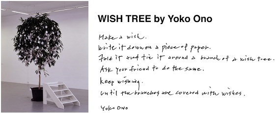

I'm a PhD student at UW PLSE. I create means to realize thoughts.
In my lab, that means to experiment with languages used to program machines. I believe programs can be weaved from threads (Autobahn), in addition to being sewn from fragments (Metalift). Moreover, the act of programming itself can be automated (synthesis), if we can say what we want clearly (formal methods).

updated 11/2017